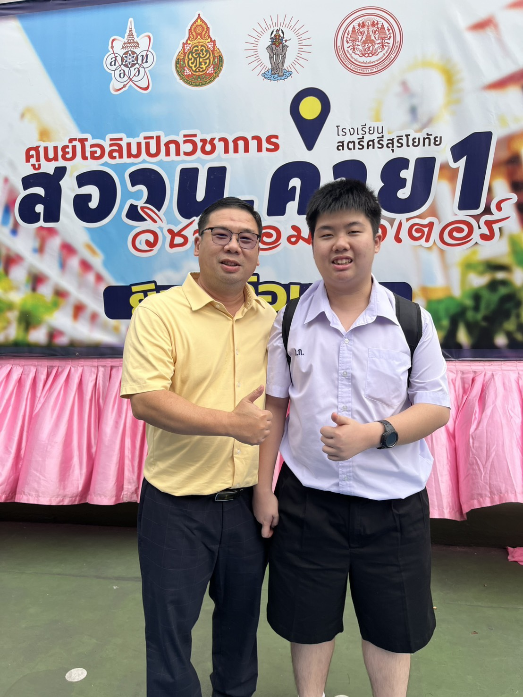
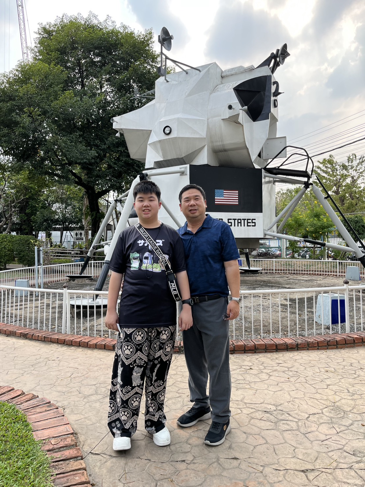
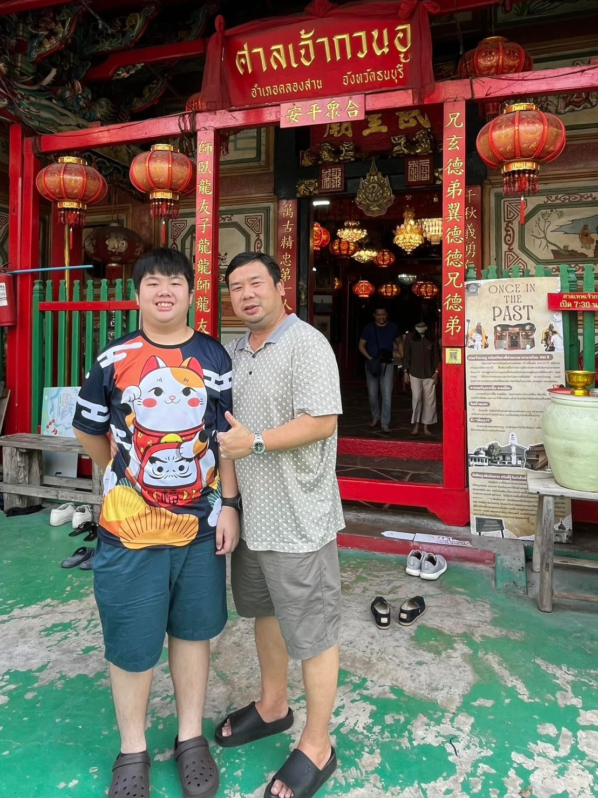

💛❤️วันพ่อแห่งชาติ❤️💛
สิ่งที่อยากจะบอกพ่อ
ผมอยากขอบคุณพ่อมากนะครับสำหรับทุกสิ่งทุกอย่างที่พ่อมอบให้ผมมาตลอด ขอบคุณที่ทำงานหนักเพื่อให้ครอบครัวของเรามีความสุขและให้ผมได้มีโอกาสดีๆ ในชีวิต หลายครั้งที่เห็นพ่อเหนื่อยแต่พ่อก็ไม่เคยบ่นเลย ความอดทนและความเสียสละของพ่อเป็นแบบอย่างที่ยิ่งใหญ่ที่สุดที่ทำให้ผมอยากเติบโตไปเป็นคนที่ดีและเข้มแข็งให้ได้เหมือนพ่อครับ
ถึงแม้ว่าในบางช่วงเวลาเราอาจจะไม่ได้พูดคุยกันบ่อยนัก หรือผมอาจจะมีช่วงที่ดื้อรั้นไปบ้างตามประสาวัยรุ่น แต่ในใจลึกๆ ผมรู้เสมอว่าทุกคำสอนหรือคำแนะนำของพ่อล้วนมาจากความรักและความหวังดีที่มีให้ผมอย่างเต็มเปี่ยม ทุกคำเตือนของพ่อคือเข็มทิศที่ช่วยให้ผมผ่านพ้นปัญหาต่างๆ มาได้ และผมก็ภูมิใจเสมอที่ได้เกิดมาเป็นลูกของพ่อครับ
สุดท้ายนี้ อยากให้พ่อช่วยรักษาสุขภาพตัวเองให้มากๆ นะครับ อย่าโหมทำงานหนักจนลืมพักผ่อน เพราะความสุขของผมคือการเห็นพ่อมีสุขภาพที่แข็งแรงและอยู่เป็นกำลังใจให้กันไปนานๆ ผมรักพ่อมากนะครับ และสัญญาว่าจะตั้งใจทำหน้าที่ของตัวเองให้ดีที่สุดเพื่อให้พ่อได้ภูมิใจในตัวลูกคนนี้เสมอครับ
 
บทกลอนมอบให้พ่อ
พ่อฉันทำงานหนัก ด้วยความรักมีต่อฉันเหน็ดเหนื่อยไม่เคยหวั่น เพื่อให้ฉันได้เล่าเรียน
ทุกคำที่พร่ำวอน ที่พ่อสอนให้อ่านเขียน
ฉันใช้เป็นแสงเทียน ส่องสว่างนำทางเอย